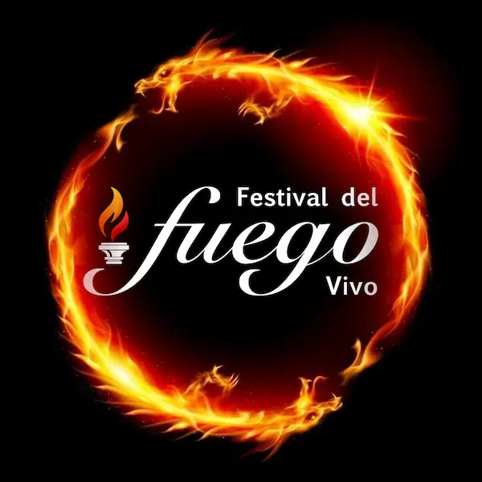
Desfile · 12 Stands · Conferencia · Teatro · Un día para vivir la sabiduría del Antiguo Egipto.
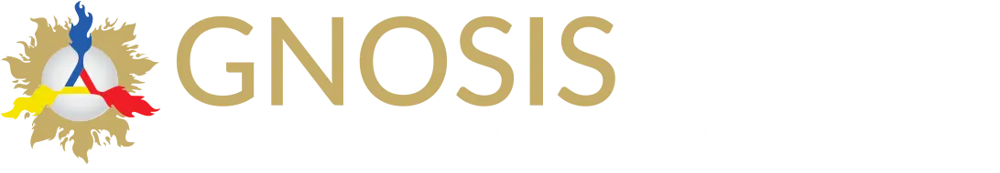
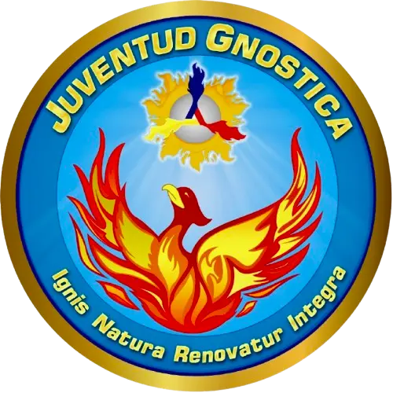
El Festival del Fuego Vivo es una jornada cultural gratuita que acerca al público la sabiduría del Antiguo Egipto a través del arte, la reflexión y la gnosis práctica. Desfile, 12 stands, conferencia y teatro en un mismo día.
Para todo público: familias, estudiantes, amantes del arte y la historia.
Recorrido temático por la ciudad · llegada a zona de stands.
Pirámides y Faraón · Mitología · Tarot · Deidades · Libro de los Muertos · Música · Autorrealización (Rey Interno) · Justicia Cósmica (Ma’at) · Simbología · Nut e Isis · Agricultura · Gnosis.
Una narración viva sobre arquetipos, juicio y transformación interior.
Misterios de la vida y la muerte en escena.
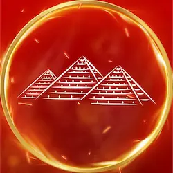
Arquitectura sagrada y linaje real.
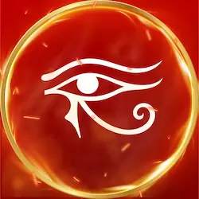
Dioses, relatos y símbolos arquetípicos.
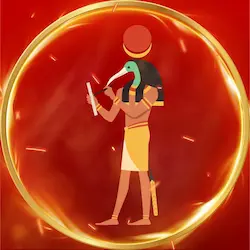
22 Mayores y 56 Menores en clave egipcia.
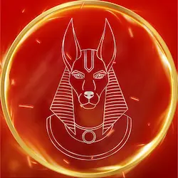
Litúrgicas y gnósticas · instrumentos y muestras.
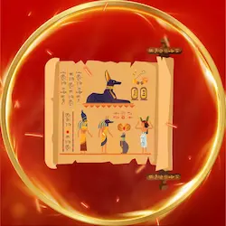
Textos, pasajes y juicio del alma.
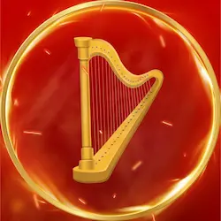
Sonidos, ritmos y atmósferas del Nilo.
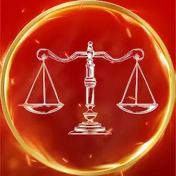
Rey interno · práctica gnóstica.
Verdad, balanza y orden universal.
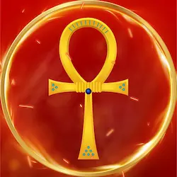
Ankh, Udyat, cobra y más.
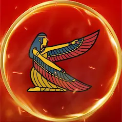
Misterios de la mujer · cuidado y magia.
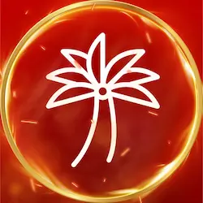
Saberes de la tierra y ciclos.
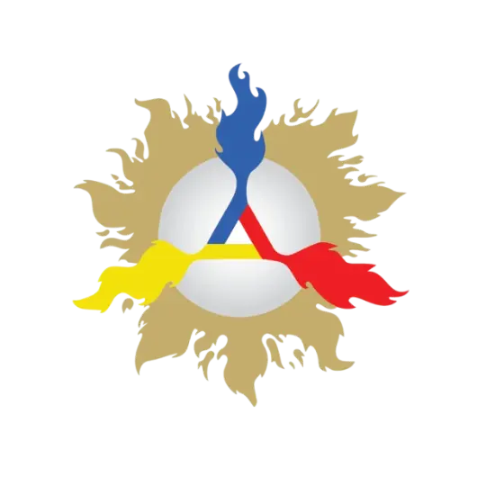
Stand de la Cultura Gnóstica, sus programas de estudios gratuitos y más
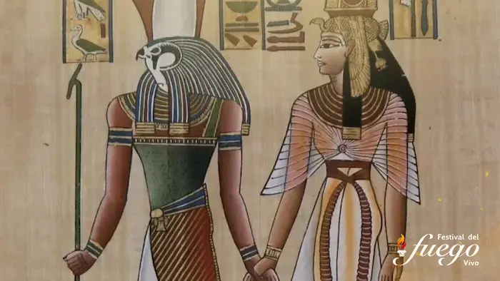
Una narración viva para comprender arquetipos de muerte, desmembramiento y resurrección; la victoria de Horus y el juicio de Osiris como claves de transformación interior.
18:00 – 19:00 · Talca
Reservar mi lugar (gratis)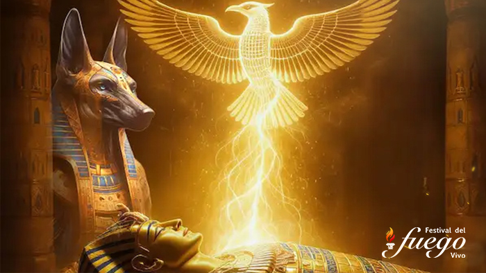
Una obra magistral de los misterios de la Vida y de la Muerte que invita al asombro y al autoconocimiento a través de símbolos, música y puesta en escena.
19:30 – 21:00 · Talca
Asistir al cierreLugar: Talca (dirección exacta por confirmar aquí y en redes).
Entrada: Libre y gratuita.
Recomendaciones: Llega con anticipación al desfile; ropa cómoda y agua.
Sí, es un evento familiar. Se recomienda supervisión en desfile y teatro.
Se informará el detalle al confirmar el lugar exacto.
Zonas de descanso y prioridad a adultos mayores. Indícalo en tu registro.
¡Asegura tu lugar en esta jornada única! El registro es gratuito y nos ayuda a organizar mejor el evento.
Síguenos
Facebook · Instagram · YouTube: @festivalFuegovivoChile
Organiza
Asociación Cultural de Estudios Gnósticos de Chile.